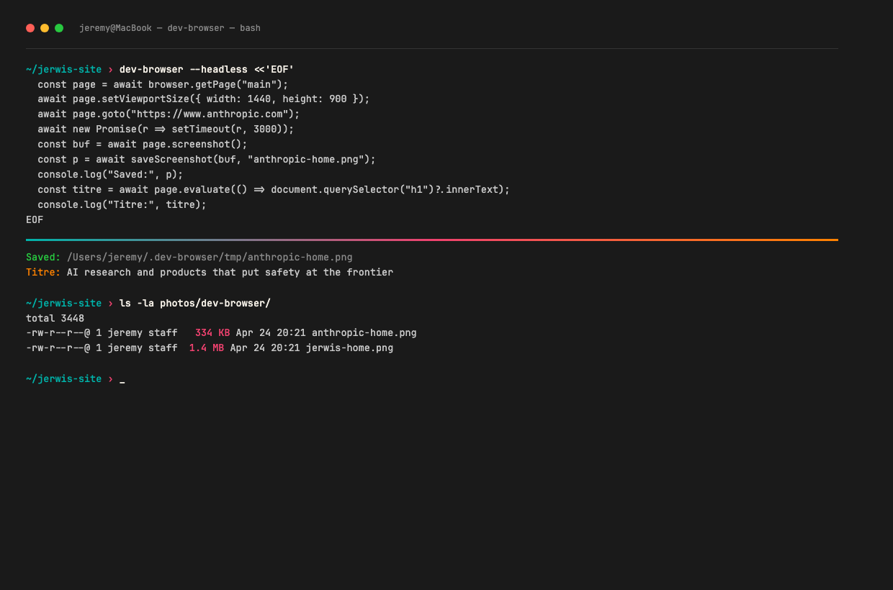
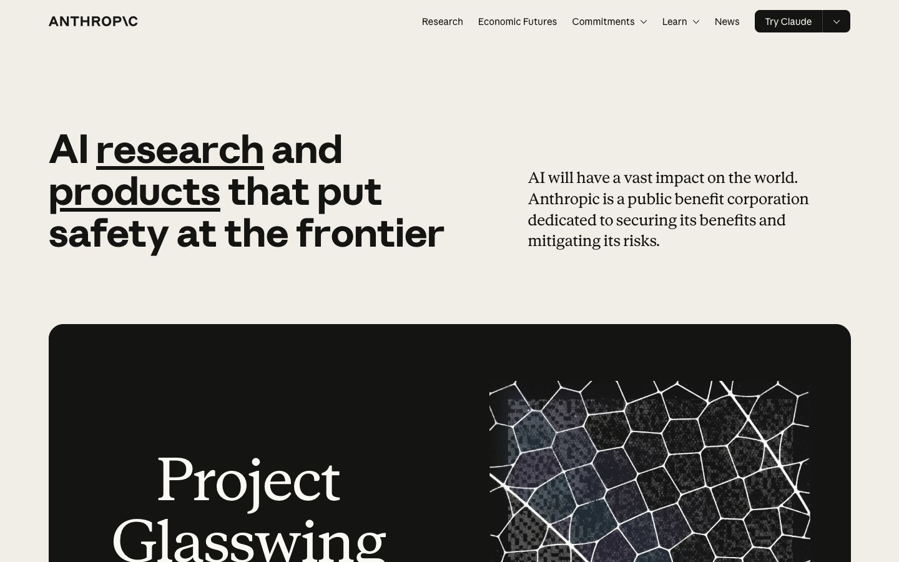
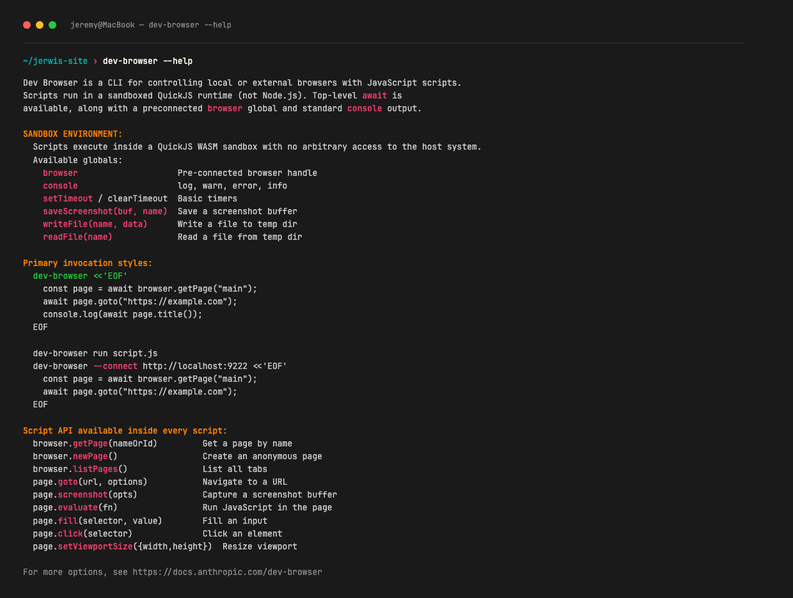

Dev-browser, c'est le chaînon manquant entre Claude et le web. Tu demandes à ton IA de regarder une page, de remplir un formulaire, de prendre un screenshot (capture d'écran), de comparer deux sites. Pas de clic humain. Juste un petit script (un mini-programme) que Claude écrit pour toi. Je l'utilise tous les jours pour scraper (aspirer le contenu d'une page), tester mes pages, vérifier des sources. Voici comment ça marche, comment l'installer, et pourquoi c'est devenu indispensable.
Si certains termes te perdent (Claude Code, terminal, agent, MCP, skill…), commence d'abord par le guide débutant et garde le lexique ouvert dans un autre onglet. Tu reviendras ici avec les bases.
Tu as déjà essayé de demander à ChatGPT ou Claude d'aller lire une page web ? Tu connais la frustration. Parfois il y arrive, parfois il te dit « Désolé, je ne peux pas accéder à cette URL ». Ou pire : il hallucine un contenu qu'il n'a jamais vu, te raconte des choses qui n'existent pas, te cite des chiffres inventés. Tu cliques le lien pour vérifier, et tu te rends compte que la page parle d'un sujet complètement différent.
Dev-browser règle ce problème. C'est un navigateur sans fenêtre (Chromium en coulisse, comme Chrome sans les pubs) que ton IA pilote en écrivant un petit script. Tu n'ouvres jamais Chrome toi-même. Tu dis ce que tu veux, Claude écrit le script, il s'exécute dans un Chrome invisible, tu récupères ce qui t'intéresse · le texte d'un article, un chiffre précis dans un tableau, un screenshot d'une page, le rendu d'une page que tu viens de modifier. Sous le capot, dev-browser s'appuie sur la même mécanique que Playwright et Puppeteer (les deux librairies de référence pour piloter un navigateur), mais tu ne touches jamais leur API : Claude le fait pour toi.
Je l'ai installé sur mon Mac il y a deux mois. Aujourd'hui, je l'utilise presque tous les jours : vérifier qu'une page est bien déployée, scraper un site que Claude ne connaît pas, prendre un screenshot pour valider un design, tester le formulaire d'inscription de mon site sans ouvrir Chrome à la main, capturer un article concurrent avant qu'il change.
Le déclic, pour moi, ça a été le moment où j'ai compris que dev-browser n'est pas un outil de dev. C'est un outil d'entrepreneur curieux qui veut que son IA puisse vraiment faire ce qu'il lui demande. Tu ne te bats plus avec des « je ne peux pas accéder », tu ne copies-colles plus du contenu à la main, tu n'ouvres plus dix onglets Chrome pour vérifier dix pages. Tu délègues, et ton IA exécute pour de vrai.
Si tu utilises Claude Code tous les jours et que tu touches à du web (un site, des sources à vérifier, un scraping ponctuel), dev-browser doit être installé chez toi. Il rend ton IA vraiment utile pour les tâches qui touchent à Internet. Trois minutes d'install, retour sur investissement en dix minutes. Je ne connais pas un seul outil dans la galaxie Claude Code qui ait un meilleur ratio effort/valeur.
Claude connaît énormément de pages grâce à son entraînement. Mais deux limites :
Dev-browser corrige les deux. Il ouvre vraiment un navigateur (Chromium en coulisse, comme Chrome sans les pubs) sans fenêtre graphique. Claude y envoie des ordres en JavaScript : « va sur cette page, attends 3 secondes, récupère le texte du h1, clique sur ce bouton ».
Imagine un robot qui ouvre Chrome à ta place et fait exactement ce que tu lui dis. C'est ça, dev-browser. Sauf que le robot, c'est ton ordi, et que la fenêtre Chrome, tu ne la vois jamais. Tout se passe en coulisse.
Concrètement, voilà ce qui se passe quand tu demandes à Claude « va voir si ma page est en ligne » :
Tu n'as jamais vu Chrome s'ouvrir. Tu n'as jamais cliqué. Tu n'as jamais écrit une ligne de code. Tu as juste demandé en français, et tu as reçu la réponse en français. C'est tout.
Tu n'écriras jamais ça toi-même, mais voilà ce que Claude tape dans ton terminal quand tu lui demandes de récupérer le titre de jerwis.fr :
dev-browser --headless <<'EOF'
const page = await browser.getPage("main");
await page.goto("https://jerwis.fr");
const titre = await page.evaluate(() => document.querySelector("h1").innerText);
console.log(titre);
EOF
Lecture en français : « ouvre un navigateur, va sur jerwis.fr, récupère le texte du gros titre (le h1), affiche-le dans le terminal ». Fin. Le navigateur se ferme tout seul, le titre s'affiche, Claude te le renvoie. Cinq secondes chrono.

Tu ne tapes jamais un script dev-browser toi-même. Tu demandes ce que tu veux en français à Claude. Claude fait le script. Tu restes à 100 % dans ton rôle d'entrepreneur qui demande, jamais de développeur qui code.
Sur le papier, dev-browser sonne « outil de dev pour scraper et tester ». Dans la vraie vie, c'est un assistant qui te débloque des trucs que tu ferais à la main, mal, en perdant du temps. Voilà 5 cas où je m'en sers, qui n'ont rien à voir avec du code.
Tu modifies une page de ton site (un texte, un prix, une image), tu push sur ton hébergeur. Avant, tu ouvrais Chrome, tu allais sur la page, tu vérifiais à l'œil. Maintenant tu demandes à Claude : « vérifie que la page tarifs de mon site affiche bien 49 € et pas 39 € ». Il lance dev-browser, charge la page, lit le prix, te confirme.
Je l'utilise à chaque déploiement. Ça m'évite les « j'ai oublié de vider le cache navigateur, je vois la vieille version ». Dev-browser charge la page propre, me dit ce qui est vraiment en ligne pour les visiteurs.
La commande que Claude lance pour toi :
dev-browser --headless <<'EOF'
const page = await browser.getPage("main");
await page.goto("https://tonsite.fr/tarifs");
const texte = await page.evaluate(() => document.body.innerText);
console.log(texte.includes("49 €") ? "OK 49€ visible" : "MANQUANT");
EOF
Tu demandes à ChatGPT ou Claude « lis cet article et résume-le ». Réponse : « désolé, je ne peux pas accéder à cette URL ». Pourquoi ? Le site bloque les bots, demande d'accepter les cookies, redirige vers une page login. Dev-browser, lui, simule un vrai utilisateur : il accepte les cookies, attend le chargement, lit la page comme toi tu le ferais.
Dernière fois, j'avais besoin d'un chiffre précis dans une étude McKinsey planquée derrière un cookie wall. ChatGPT bloqué. Claude + dev-browser : 10 secondes pour récupérer le chiffre + la source. Pareil pour les articles paywall partiels (Le Monde, Les Échos quand le début est lisible) : dev-browser lit ce qui est visible, Claude résume.
La commande type :
dev-browser --headless <<'EOF'
const page = await browser.getPage("main");
await page.goto("https://site-bloqué.com/article");
await new Promise(r => setTimeout(r, 3000));
const article = await page.evaluate(() => document.querySelector("article").innerText);
console.log(article);
EOF
Tu tombes sur un site qui te plaît (un concurrent, une landing page bien foutue, le portfolio d'un freelance). Tu veux l'envoyer à ton designer ou le coller dans une réunion. Tu dis à Claude : « prends un screenshot de stripe.com en taille desktop ». Il lance dev-browser, capture l'image en 1920×1080, te la montre dans la conversation, tu la sauvegardes.
Pratique aussi pour archiver une page avant qu'elle change. Une promo, une mention légale, une version d'une page concurrent que tu veux garder. Dev-browser fige l'instant, tu as la preuve.
La commande :
dev-browser --headless <<'EOF'
const page = await browser.getPage("main");
await page.setViewportSize({ width: 1920, height: 1080 });
await page.goto("https://stripe.com");
await page.screenshot({ path: "stripe-home.png", fullPage: true });
console.log("Screenshot enregistré : stripe-home.png");
EOF

Tu modifies le formulaire d'inscription de ta newsletter. Tu veux vérifier que le flux complet marche : remplir, soumettre, recevoir le message de confirmation, voir l'email arriver. Avant : tu testais à la main, tu créais des emails bidons (qui polluaient ta base), tu oubliais des cas. Maintenant, tu dis à Claude : « va sur ma home, remplis le formulaire newsletter avec test@example.com, clique submit, dis-moi si le message de succès s'affiche ». Il fait, il rapporte.
Bonus : tu peux lui demander de tester avec une fausse adresse pour voir si la validation marche, avec un email déjà inscrit pour voir le message d'erreur. Trois scénarios en 30 secondes, là où ça t'aurait pris 10 minutes à la main.
La commande :
dev-browser --headless <<'EOF'
const page = await browser.getPage("main");
await page.goto("https://tonsite.fr");
await page.fill("input[type=email]", "test@example.com");
await page.click("button[type=submit]");
await new Promise(r => setTimeout(r, 2000));
const message = await page.evaluate(() => document.querySelector(".success-msg")?.innerText);
console.log(message || "Aucun message de succès trouvé");
EOF
Tu déploies une nouvelle page. Sur ton ordi, elle est belle. Mais sur mobile ? Tu pourrais ouvrir Chrome, faire F12, passer en mode mobile, scroller. Ou tu peux demander à Claude : « capture ma page tarifs en mobile (iPhone 14) et en desktop, compare ». Il lance dev-browser deux fois (une taille mobile, une taille desktop), te montre les deux images, te dit ce qui déborde.
J'utilise ça à chaque grosse refonte UI. Surtout pour les hero sections où le H1 peut casser sur petit écran. Dev-browser te montre la vérité, sans que tu aies besoin de sortir ton téléphone.
La commande :
dev-browser --headless <<'EOF'
const page = await browser.getPage("main");
await page.setViewportSize({ width: 390, height: 844 });
await page.goto("https://tonsite.fr/tarifs");
await page.screenshot({ path: "tarifs-mobile.png", fullPage: true });
console.log("Mobile capturé");
EOF
Depuis 2 mois, dev-browser tourne 10 à 15 fois par jour sur mon Mac. Voilà ma routine type :
Le matin (5 min) · « Claude, vérifie que jerwis.fr et mes 3 autres sites répondent bien et que la home charge en moins de 3 secondes ». Il lance dev-browser sur chacun, me dit si tout est nominal. Je commence ma journée tranquille, sans avoir ouvert un seul navigateur.
Avant chaque push · « capture la page que je viens de modifier en avant/après, dis-moi ce qui change visuellement ». Évite que je casse un design sans m'en rendre compte.
Quand Claude bloque sur un site · si Claude me dit « je ne peux pas accéder à cette URL », je relance avec « utilise dev-browser ». Dans 9 cas sur 10, ça passe. Le dernier 1/10, c'est un site avec captcha (Cloudflare niveau max) · là je laisse tomber.
En soirée · « capture les 5 nouvelles pages de mon site et liste les coquilles ». Dev-browser parcourt, Claude relit, je corrige. Mon proofreader gratuit, qui ne dort jamais.
Tu n'as pas besoin de retenir ces commandes. Tu peux les copier, les coller dans ton terminal en remplaçant l'URL, et c'est parti. Ou mieux : tu les montres à Claude une fois en disant « voilà mon style de commande, garde-le », et il les réutilisera tout seul ensuite.
Le pain quotidien. Capturer un site complet, du haut en bas, en taille desktop par défaut.
dev-browser --headless <<'EOF'
const page = await browser.getPage("main");
await page.goto("https://jerwis.fr");
await new Promise(r => setTimeout(r, 2000));
await page.screenshot({ path: "capture.png", fullPage: true });
console.log("Screenshot enregistré : capture.png");
EOF
Le fichier capture.png apparaît dans le dossier où tu as lancé la commande. Tu changes l'URL, tu relances, tu as une nouvelle capture.
Génial pour valider qu'une modification est bien en ligne sans ouvrir de navigateur. Réponse en 1 ligne dans ton terminal.
dev-browser --headless <<'EOF'
const page = await browser.getPage("main");
await page.goto("https://jerwis.fr/articles");
const texte = await page.evaluate(() => document.body.innerText);
console.log(texte.includes("dev-browser") ? "OK trouvé" : "ABSENT");
EOF
Tu remplaces "dev-browser" par n'importe quel mot, prix, nom. Pratique pour vérifier qu'un changement de prix est bien rendu, qu'un nouvel article apparaît dans la liste, qu'une promo est bien visible.
Le test d'inscription newsletter, de contact, de commande. Remplir, soumettre, vérifier le message de confirmation.
dev-browser --headless <<'EOF'
const page = await browser.getPage("main");
await page.goto("https://jerwis.fr");
await page.fill("input[type=email]", "test@example.com");
await page.click("button[type=submit]");
await new Promise(r => setTimeout(r, 3000));
await page.screenshot({ path: "form-result.png", fullPage: true });
console.log("Formulaire soumis, capture enregistrée");
EOF
Tu adaptes le sélecteur du champ (input[type=email]) et du bouton (button[type=submit]) selon ta page. Si tu ne sais pas, tu demandes à Claude : « regarde le HTML de cette page et dis-moi quels sélecteurs utiliser pour le formulaire newsletter ». Il les trouve, il adapte la commande.
Tu ne mémorises rien. Tu sauvegardes ces 3 commandes dans un fichier commandes-dev-browser.md sur ton bureau. Quand tu en as besoin, tu copies, tu adaptes l'URL, tu colles. Tu les montres une fois à Claude pour qu'il connaisse ton format préféré, et après tu lui demandes en français · il les réutilisera comme template.
Au-delà des 5 cas vraiment quotidiens, voilà ce que j'expérimente depuis quelques semaines. Pas tous au point, mais déjà utilisables si tu veux pousser.
Tu vends un produit ou un service, tu veux savoir si ton concurrent a bougé son prix. Tu lances dev-browser en cron (programmé pour s'exécuter automatiquement, par exemple chaque matin à 8h). Il va sur la page, lit le prix, le compare au prix du jour précédent. Si ça a changé, tu reçois un email ou un message Slack. Coût : 5 minutes de setup avec Claude, et tu as ton radar concurrent qui tourne tout seul.
Tu modifies ta page de vente, tu veux vérifier que tout le tunnel marche encore. Dev-browser peut simuler un acheteur : aller sur la home, cliquer « acheter », remplir le formulaire CB de test Stripe (le numéro officiel 4242 4242 4242 4242, valable sur n'importe quel site Stripe en mode test), valider, vérifier la page de confirmation. En 30 secondes, tu sais si quelque chose est cassé. Pratique avant chaque mise en prod sur un site e-commerce.
Tu vois une thread X qui te plaît, un post LinkedIn que tu veux garder. Le compte peut être supprimé, le post effacé, la plateforme peut bloquer l'accès. Tu demandes à Claude : « capture cette URL X en plein écran, garde toute la thread visible ». Dev-browser scroll automatiquement, capture la thread complète, te sort un PNG. Ton archive perso de pépites est en sécurité.
Tu hésites entre 2 designs. Ou tu veux comparer 2 concurrents. Dev-browser capture les 2 sites dans la même résolution, Claude te génère une image avec les 2 captures côte à côte, tu vois la différence d'un coup d'œil. Génial pour les réunions où tu veux montrer « voilà ce qu'ils font, voilà ce qu'on fait, voilà la différence ».
Tu veux extraire toutes les images d'une page (un portfolio, une galerie produit). Tu demandes à Claude : « va sur cette URL, télécharge toutes les images en haute résolution, range-les dans un dossier ». Dev-browser parcourt la page, identifie chaque image, télécharge. Tu as ta moodboard prête en 1 minute, là où à la main il aurait fallu 30 clics droits.
node --version · si ça affiche un chiffre, c'est bon)Ouvre ton terminal. Colle la commande que Claude te donnera quand tu lui demanderas « installe dev-browser pour moi ». Ça se fait généralement avec npm install -g @anthropic-ai/dev-browser (ou l'équivalent selon la version du moment · demande à Claude la commande exacte actuelle).
Toujours dans ton terminal, tape :
dev-browser --help
Si tu vois une liste d'options qui défile (un truc dans le genre de la capture ci-dessous), c'est installé. Sinon, relance ton terminal ou demande à Claude de t'aider à débugger.

dev-browser --help · ce que tu dois voir si l'install s'est bien passéeOuvre Claude Code dans un dossier, n'importe lequel, et dis-lui :
« Utilise dev-browser pour aller sur jerwis.fr et me donner le titre de la page »
Claude va écrire un petit script, le lancer, et te renvoyer « Suis l'IA. Sans être dev. Sans y passer tes soirées. » (mon H1 actuel). Si ça marche, tu es équipé. Sinon, Claude t'aidera à corriger.
La première fois que j'ai lancé dev-browser, une fenêtre Chrome s'est ouverte sur mon écran et m'a fait sursauter. C'est parce que j'avais oublié le flag --headless. Sans ce flag, le navigateur apparaît vraiment. Demande toujours à Claude d'ajouter --headless par défaut. Tu ne verras plus rien, comme il se doit.
Certains sites (X/Twitter, LinkedIn connecté, Reddit parfois) détectent les navigateurs automatisés et bloquent. Dev-browser peut se connecter à ton Chrome existant avec le flag --connect (un flag = une option qu'on passe à la commande), mais c'est plus technique. Pour le grand public, j'accepte simplement que 10 % des sites refusent · je passe à autre chose.
Certaines pages mettent 5-10 secondes à se charger complètement. Par défaut, dev-browser attend 2 secondes. Si Claude ne trouve pas un élément, c'est souvent un souci de timing. La solution : demande à Claude d'ajouter await new Promise(r => setTimeout(r, 5000)). Il saura.
Dev-browser est fait pour les tâches ponctuelles · vérifier une page, tester un flux, récupérer une donnée précise. Si tu veux scraper 10 000 pages pour un projet massif, il faut d'autres outils (Apify, Bright Data, ou du code custom — fait sur mesure). Pour tout le reste, dev-browser suffit.
Ma règle perso : tant que je reste sous 50 pages d'un coup, dev-browser fait le boulot sans broncher. Au-delà, je passe sur un outil dédié ou je découpe en plusieurs lots. 95 % de mes usages tiennent largement dans cette limite.
(1) Le flag --headless est bien là. (2) Je demande à Claude en français, pas en code. (3) Je valide le résultat qu'il me renvoie avant de le croire sur parole. → Ces 3 réflexes couvrent 95 % de mon usage.
Oui, totalement. C'est un package open source qu'on installe en 1 ligne. Pas d'abonnement, pas de quota, pas de carte bleue à filer. Le seul coût, c'est ton abonnement Claude Code (autour de 20 $/mois pour le plan Pro, ou gratuit avec des limites).
Oui, mais il faut passer par WSL (Windows Subsystem for Linux), un Linux intégré à Windows. Trois minutes à activer dans les paramètres Windows, après ça marche pareil que sur Mac. Si tu n'as jamais touché à WSL, demande à Claude de te guider.
Non, pas du tout. Tu demandes en français à Claude « va sur cette page et fais ça », il écrit le script, il l'exécute, te renvoie le résultat. Tu n'écris jamais une ligne de code. Le seul moment où tu touches au terminal, c'est pour copier-coller la commande d'installation, une fois.
Non. Apify et Bright Data sont faits pour le scraping industriel (10 000+ pages, rotation d'IP, contournement de captchas). Dev-browser est fait pour les usages perso et ponctuels (vérifier 1 page, capturer 5 sites, tester 1 formulaire). Pour 99 % des entrepreneurs solo, dev-browser suffit largement.
Le scraping de pages publiques est généralement toléré, à condition de respecter le robots.txt du site (la RFC 9309 décrit le standard). En revanche, scraper du contenu derrière un login, contourner un paywall, ou aspirer massivement des données perso → zone grise voire interdite (voir les positions de la CNIL). Ma règle : j'utilise dev-browser pour ce que je consulterais déjà à la main.
10 minutes pour le premier usage qui marche. Une semaine pour avoir 5 commandes prêtes que tu réutilises. Un mois pour que ce soit un réflexe. Aucune courbe d'apprentissage abrupte parce que c'est Claude qui fait le code.
Playwright et Puppeteer sont les bibliothèques d'automatisation navigateur que les devs utilisent depuis des années. Dev-browser s'appuie dessus mais ajoute une couche d'abstraction pensée pour Claude : tu dis ce que tu veux en français, l'IA écrit le script, le sandbox QuickJS l'exécute. Tu n'as pas à apprendre l'API Playwright pour t'en servir.
Oui. Dev-browser tourne en local sur ta machine via un Chromium piloté par un daemon local. Les screenshots et les contenus extraits sont stockés dans ~/.dev-browser/tmp/ sur ton ordi. Rien ne part ailleurs sauf si tu uploads toi-même ou si Claude Code analyse l'image dans la conversation.
Le tool en lui-même est gratuit. Le coût vient de Claude qui écrit et lit les scripts : sur un usage de 10-15 runs par jour avec des prompts courts, je sens à peine la différence sur ma facture Claude Code Max. Compte 1 à 3 € de tokens par jour selon la taille des pages que tu scrapes.
Tu acceptes que ce site n'est pas pour toi. Cloudflare niveau max, captcha visuel, fingerprint navigateur : ce sont des défenses anti-bot industrielles, pas faites pour être contournées par un outil perso. Pour ces 5-10 % de sites, je passe à autre chose ou j'ouvre la page à la main.
Si tu veux creuser :
Si tu installes dev-browser cette semaine et que tu l'utilises pour un vrai cas, réponds à ma newsletter et raconte-moi. Ça m'aide à savoir ce qui marche pour les autres. Je lis tout, je réponds, je peux me tromper sur tes besoins — tes retours me recadrent.
Une commande qui a changé, une option dépréciée, une nouvelle version de dev-browser ? Écris-moi à sagnier.jeremy@gmail.com · je corrige en 48h max et je note la date de MAJ en haut de l'article. Les retours terrain valent mille fois les articles — je lis tout, je réponds.
Chaque fois que je publie un nouveau tuto Claude Code / IA, je l'envoie dans ma newsletter AI Playbook. Si tu ne veux pas manquer le prochain, laisse-moi ton email sur la home.
Voir les newsletters →